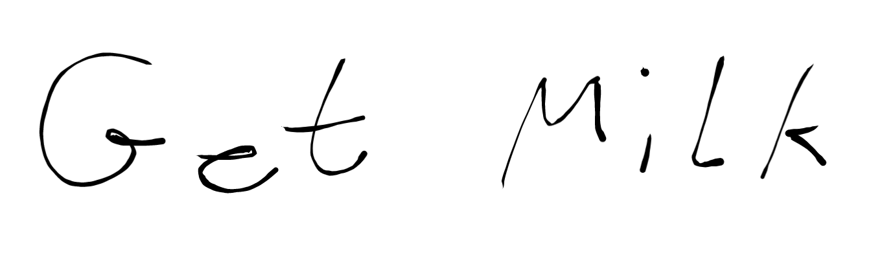
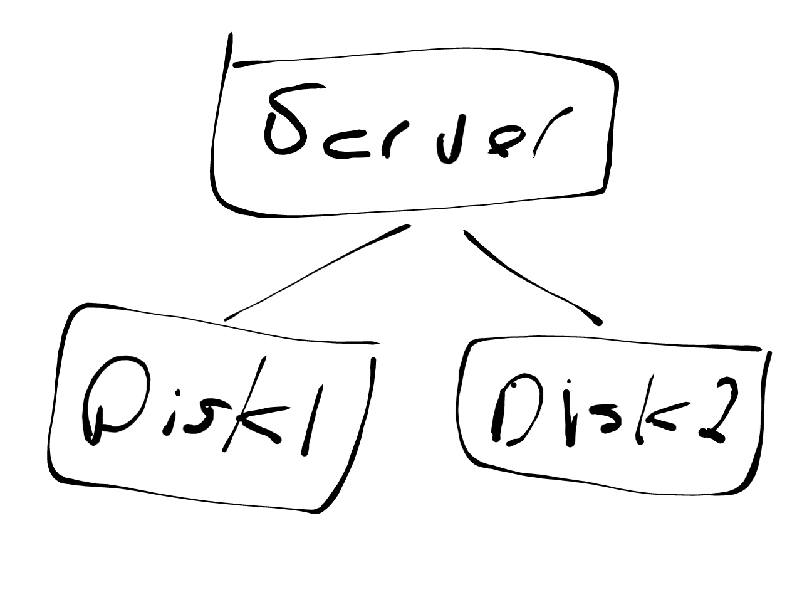
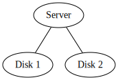
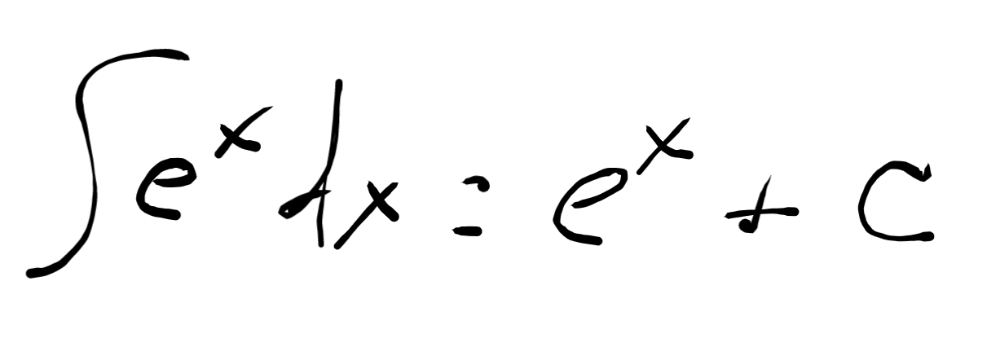

BitWorking
BitWorking
A failure of formats

A failure of formats
I have a very long diatribe on the state of document editors that I am working on, and almost anyone that knows me has heard parts of it, as I frequently rail against all of them: MS Word, Google Docs, Dropbox Paper, etc. In the process of writing up my screed I started thinking what a proper document format would look like and realized the awfulness of all the current document formats is a much more pressing problem than the lack of good editors. In fact, it may be that failing to have a standard, robust, and extensible file format for documents might be the single biggest impediment to having good document editing tools. Seriously, even if you designed the world’s best document editor but all it can output is PNGs then how useful if your world’s best document editor?
Let’s start with HTML, as that is probably the most successful document format in the history of the world outside of plain old paper. I can write an HTML page, host it on the web, and it can be read on any computer in the world. That’s amazing reach and power, but if you look at HTML as a universal document format you quickly realize it is stunted and inadequate. Let’s look at a series of comparisons between HTML and paper, starting with simple text, a note to myself:

Now this is something that HTML excels at:
<p>Get Milk</p>
And here HTML is better than paper because that HTML document is easily machine readable. I throw in the word “easily” because I know some ML/AI practitioner will come along and claim they can also “read” the image, but we know there are many orders of magnitude difference in processing power and complexity of those two approaches, so let’s ignore them.
So far HTML is looking good. Let’s make our example a little more complex; a shopping list.
This again is something that HTML is great at:
<h1>Shopping list</h1>
<ul>
<li>Milk</li>
<li>Eggs</li>
</ul>
Not only can HTML represent the text that’s been written, but can also capture the intended structure by encoding it as a list using the <ul> and <li> elements. So now we are expressing not only the text, but also the meaning, and again this representation is machine readable.
At this point we should take a small detour to talk about the duality we are seeing here with HTML, between the markup and the visual representation of that markup. That is, the following HTML:
<h1>Shopping list</h1>
<ul>
<li>Milk</li>
<li>Eggs</li>
</ul>
Is rendered in the browser as:
Shopping list
- Milk
- Eggs
The markup carries not only the text, but also the semantics. I hesitate to use the term ‘semantics’ because that’s an overloaded term with a long history, particularly in web technology, but that is what we’re talking about. The web browser is able to convert from the markup semantics, <ul> and <li>, into the visual representation of a list, i.e. vertically laying out the items and putting bullets next to them. That duality between meaningful markup in text, distinct from the final representation, is important as it’s the distinction that made search engines possible. And we aren’t restricted to just visual representations, screen readers can also use the markup to guide their work of turning the markup into audio.
But as we make our example a little more complex we start to run into the limits of HTML, for example when we draw a block diagram:

When the web was first invented your only way to add such a thing to web page would have been by drawing it as an image and then including that image in the page:
<img src="server.png" title="Server diagram with two disk drives.">
The image is not very machine readable, even with the added title attribute. HTML didn’t initially offer a native way to create that visualization in a semantically more meaningful way. About a decade after the web came into being SVG was standardized and became available, so you can now write this as:
<svg width="580" height="400" xmlns="http://www.w3.org/2000/svg">
<title>Server diagram with two disk drives.</title>
<g>
<rect height="60" width="107" y="45" x="215" stroke-width="1.5" stroke="#000" fill="#fff"/>
<text font-size="24" y="77" x="235" stroke-width="0" stroke="#000" fill="#000000" id="svg_3">
Server
</text>
<line y2="204" x2="173" y1="105" x1="267" stroke-width="1.5" stroke="#000" fill="none" id="svg_4"/>
<rect height="59" width="125" y="205" x="98" stroke-width="1.5" stroke="#000" fill="#fff" id="svg_5"/>
<rect height="62" width="122" y="199" x="342" stroke-width="1.5" stroke="#000" fill="#fff" id="svg_6"/>
<line y2="197" x2="403" y1="103" x1="268" stroke-width="1.5" stroke="#000" fill="none" id="svg_7"/>
<text font-size="24" y="240" x="119" fill-opacity="null" stroke-opacity="null" stroke-width="0" stroke="#000" fill="#000000" id="svg_8">
Disk 1
</text>
<text stroke="#000" font-size="24" y="236" x="361" fill-opacity="null" stroke-opacity="null" stroke-width="0" fill="#000000" id="svg_9">
Disk 2
</text>
</g>
</svg>
This is a slight improvement over the image. For example, we can extract the title and the text found in the diagram from such a representation, but the markup isn’t what I would call human readable. To get a truly human readable markup of such a diagram we’d need to leave HTML and write it in Graphviz dot notation:
graph {
Server -- "Disk 1";
Server -- "Disk 2";
}

So we’ve already left the capabilities of HTML behind and we’ve only just begun, what about math formulas?

Again, about a decade after the web started MathML was standardized as a way to add math to HTML pages. It’s been 20 years since the MathML specification was released and you still can’t use MathML in your web pages because browser support is so bad.
But even if MathML had been fully adopted and incorporated in to all web browsers, would we be done? Surely not, what about musical notations?
If we want to include notes in a semantically meaningful way on a web page do we have to wait another 10 years for standardization and then hope that browsers actually implement the spec?
What about Feynman diagrams?

Or dance notations?
You see, the root of the issue is that humans don’t just communicate by text, we communicate by notation; we are continually creating new new notations, and we will never stop creating them. No matter how many FooML markup languages you standardize and stuff into a web browser implementation you will only ever scratch the surface, you will always be leaving out more notations than you include. This is the great failing of HTML, that you cannot define some squiggly set of lines as a symbol and then use that symbol in your markup.
Is such a thing even possible?
The only markup language that comes even close to achieving this universality of expression is TeX. In TeX it is possible to create you own notations and define how they are rendered and then to use that notation in your document. For example, there’s a TeX package that enables Feynman diagrams:
\feynmandiagram [horizontal=a to b] {
i1 -- [fermion] a -- [fermion] i2,
a -- [photon] b,
f1 -- [fermion] b -- [fermion] f2,
};
Note that both TeX and the \feynmandiagram notation are both human readable, which is an important distinction, as without it you could point at Postscript or PDF as a possible solution. While PDF may be able to render just about anything, the underlying markup in PDF files is not human readable.
I’m also not suggesting we abandon HTML in favor of TeX. What I am pointing out is that there is a serious gap in the capabilities of HTML: the creation and re-use of notation, and if we want HTML to be a universal format for human communication then we need to fill this gap.
Further Reading
I’m not the first person to address these ideas by any stretch of the imagination. For example, see the entire fields of Linguistics and Semiotics. Also watch this talk from Bret Viktor:
The Humane Representation of Thought from Bret Victor on Vimeo.
And check out Edward Tufte Sparklines.